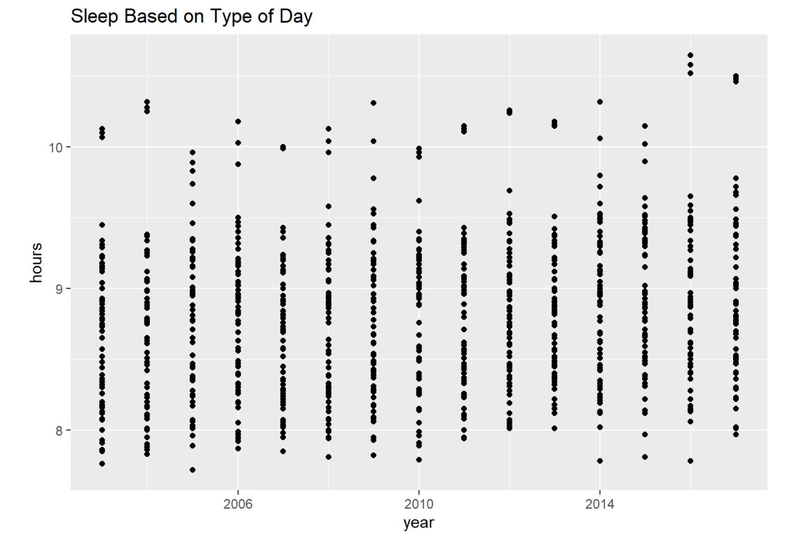
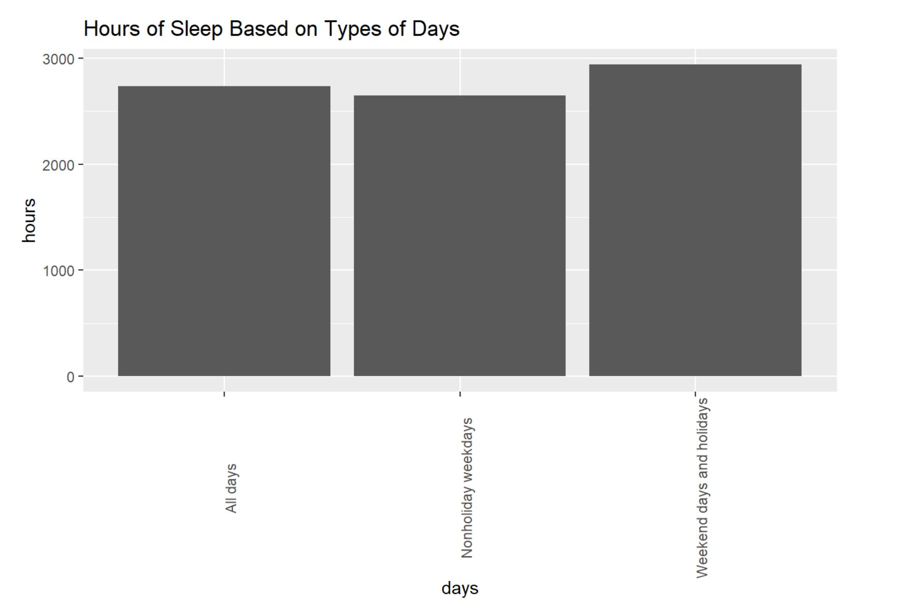

Project Conclusion
Sleep Hours Difference between Years
According to our data, it seems like there is not a big difference in between the different amount of sleep that people are getting every year. In our midway deliverable, we realized that there was only on average 0.1 hour different for Female and Male. Thus we looked at whether there is a difference between the hours of sleep between different years. The same result can be seen in our interactive scatter plot as the graphs all locks similar. If what not numbers of hours is relatively the same throughout the years. Thus, it shows that there is not a huge difference in terms of sleep hours.
And we believe this happens because nowadays, people emphasize the importance of health, and getting sufficient enough of sleep is important. However, everyone is still busy with work and school, thus there is not a huge difference or growth in terms of the hours of sleep for the population.

Increase Age = Decrease in Sleep
According to our findings, the results show that as people get older, the hours of sleep people get started to decrease. In our midway deliverable, our calculated data and table show that the hours of sleep are slowly decreasing. From our interactive graphs, we can see that there is a negative correlation between age and hours of sleep.
Our interpretation for this phenomenon is due to individual lifestyle or biological reasons. For our age group, it is obvious that students tend to procrastinate, so that means we have to sacrifice or sleep. However, for older people, the reason they are getting less sleep is due to biological factors. As people get old, their body produces less melatonin, which the is hormone that promotes sleep. Additionally, older people are more sensitive to environments, which they can get easily woken up during the night. With so many problems and factors, this explains why has people get older, the hours of sleep they get slowly decrease.


Weekend and Holidays are for Recharging
According to our research and data, it seems like people tend to sleep more on the weekends and holidays. During our midway deliverable, we see a slight pattern of that people tend to sleep more on the weekends and holidays through the bar charts. We also see the same pattern in our interactive charts.
We assume that this happened is because people do not have to go to work or school on weekends or holidays. Thus, people can stay home and sleep on those days to make up for the loss hours of sleep during the weekdays.
